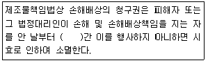
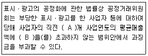
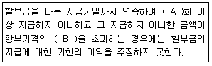
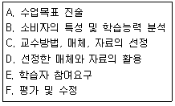
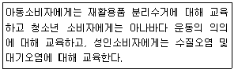
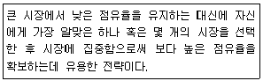

소비자전문상담사-2급 (2011-08-21 기출문제)
1과목: 소비자상담 및 피해구제
1. 소비자상담 기법 중 의견 중 의견구하기 기법에 해당하는 것은?
- 예를 하나 들어주시겠습니까?
- 그것은 정말 화가나는 일이네요.
- 당신이 말하고자 하는 바는 이런 것이군요.
- 그런 일이 내게 일어났다면 나는 너무 화가 났을거에요.
(정답률: 알수없음)

2. 소비자가 제품을 구매할 때 기업의 소비자상담사가 해야 할 가장 적합한 역할은?
- 경쟁기업의 상술에 대해 주의를 주고 자사제품의 우수성만을 설명한다.
- 객관적인 의견과 전문적인 지식에 근거하여 능동적인 대화로 정보를 제공한다.
- 기업의 이익을 창출하기 위해 소비자를 현혹시킬 수 있는 대화기법을 개발한다.
- 기업에 유리한 지불결제방법 중에서 소비자가 한 가지 결제방법을 택하도록 권유한다.
(정답률: 알수없음)
3. 구매 후 상담에 대한 설명으로 옳은 것은?
- 구매 후 소비자상담의 역할은 기업에서만 행한다.
- 상담내용에 따라 불만처리, 피해구제, 기타 상담으로 구분할 수 있다.
- 상품선택방법 상담이 대표적인 예이다.
- 구매 전 상담에 비해 상담 건수가 적은 편이다.
(정답률: 알수없음)
4. 소비자상담에서 소비자의 일반적인 욕구가 가장 거리가 먼 것은?
- 상담사로부터 개별 소비자에 대한 관심과 정성을 원한다.
- 서비스가 완벽하다면 서비스 제공에 걸리는 시간은 상관하지 않는다.
- 소비자는 자신의 문제에 대해 공감을 받고 공정하게 처리되기를 바란다.
- 유능하고 책임이 있는 일 처리를 원한다.
(정답률: 알수없음)
5. 한국소비자원의 피해구제에 대한 설명으로 틀린 것은?
- 다른 법률의 규정에 따라 설치된 전문성이 요구되는 분야의 분쟁 조정기구에 신청된 피해구제로 대통령령이 정하는 피해구제는 그 처리대상에서 제외한다.
- 국가가 제공한 물품으로 인하여 발생한 피해구제는 그 처리 대상에서 제외한다.
- 변호사와 위임인간의 직무상의 분쟁은 그 피해구제 업무에 포함된다.
- 물품의 사용으로 소비자로부터 피해구제를 요구받는 사업자는 그 처리를 의뢰할 수 있다.
(정답률: 알수없음)
6. 다음 중 기업의 소비자상담 목표와 가장 거리가 먼 것은?
- 소비자만족을 통해 이윤을 극대화 한다.
- 소비자피해를 소비자책임으로 돌려 보상비용을 극소화 한다.
- 소비자와의 관계를 향상시켜 고객유지율을 향상시킨다.
- 고객 불만 정보를 피드백 시켜 상품품질을 개선한다.
(정답률: 알수없음)
7. 한국소비자원의 분쟁조정에 관한 설명으로 옳은 것은?
- 소비자가 원한다면 소비자와 사업간의 합의 권고 절차 없이 곧바로 분쟁조정 절차를 거치는 것이 바람직하다.
- 분쟁조정은 분쟁조정요청을 받은 때로부터 6개월 이내에 이루어져야 함을 원칙으로 한다.
- 한국소비자원의 분쟁조정위원회에서 이루어진 조정안은 법적인 효력을 발생하므로 소비자와 사업자는 거절할 수 없다.
- 분쟁조정위원회의 위원장은 분쟁조정을 마친 때에는 지체없이 당사자에게 그 분쟁조정의 내용을 통지하여야 한다.
(정답률: 알수없음)
8. 기업이 기존 고객을 유지함으로써 얻을 수 있는 효과와 가장 거리가 먼 것은?
- 고객의 1인당 구매량 증대
- 고객관리 비용 절감
- 고객이 지불하는 해당 회사제품과 서비스에 대한 프리미엄 가격 감소
- 고객들 간의 긍정적인 구전효과
(정답률: 알수없음)
9. 일반적 소비자분쟁해결기준에 의하여 사업자가 피해 보상 시 이행해야 할 기준으로 틀린 것은?
- 품질보증기간 동안의 수리에 소요되는 비용은 사업자가 부담한다.
- 할인 판매된 물품을 교환하는 경우 정상판매로 환원되었다면 정상가격과 할인가격의 차액을 고려하여 교환해준다.
- 교환은 동일 물품으로 하되 동일한 물품이 없는 경우에는 동종의 유사물품으로 교환한다.
- 환급 금액은 거래 시에 교부된 영수증 등에 기재된 물품의 가격을 기준으로 한다.
(정답률: 알수없음)
10. 다음 중 아웃바운드 텔레마케팅을 시장조사 업무에 활용한 것은?
- 테스트 마케팅
- 클레임 대응
- 고객정보파악
- 앙케이트 콜
(정답률: 알수없음)
11. 다음 중 적극적으로 듣기를 위한 전략이 아닌 것은?
- 자신의 단어로 다시 바꾸어 말하기
- 필요한 내용을 질문하기
- 피드백 제공하기
- 비교하기
(정답률: 알수없음)
12. 민간소비자단체에서의 소비자상담사의 역할과 가장 거리가 먼 것은?
- 소비생활에 관련된 정보제공자로서의 역할
- 기업과 소비자 사이의 의사소통 통로로서의 역할
- 소비자피해 등 소비자문제 해결자로서의 역할
- 소비자행정의 문제점에 관한 정보수집 및 이를 소비자정책수립에 반영시키는 역할
(정답률: 알수없음)
13. 다음 중 소비자 상담사가 기업의 소비자상담을 수행하고자 할 때 특별히 더 요구되는 전문적 능력은?
- 공정하고 객관적인 판단 능력
- 자사상품에 대한 지식과 마케팅 지식
- 타인의 상황에 대한 공감 능력
- 소비자보호의 구조와 관련 기관에 대한 지식
(정답률: 알수없음)
14. 일반적 소비자분쟁해결기준상 품질보증기간 및 부품보유기간의 기준에 관한 설명으로 틀린 것은?
- 품질보증기간 및 부품보유기간은 해당 사업자가 품질보증서에 표시한 기간으로 한다.
- 품질보증기간은 소비자가 물품을 구입하거나 제공받은 다음 날부터 기산한다.
- 사업자가 품질보증기간 및 부품보유기간을 표시하지 않은 경우에는 품목별 소비자분쟁해결기준에 따른다.
- 판매일자를 확인하기 곤란한 경우에는 해당 물품의 제조일이나 수입통관일부터 3월이 지난 날부터 품질보증기간을 기산한다.
(정답률: 알수없음)
15. 기업에서 구매 전에 고객에게 할 수 있는 소비자상담 내용만으로 구성된 것은?
- 제품의 특성 및 선택방법-의ㆍ식ㆍ주 전반에 걸친 생활상식
- 제품의 가격 및 판매방법-제품의 사용 및 관리방법
- 대금지불 방법 및 배송관련 내용-소비자 건의나 제안에 대한 수혐 및 관련부서 피드백
- 제품의 장단점 및 타제품과의 비교 설명-제품의 불만사항에 대한 접수 및 처리
(정답률: 알수없음)
16. 다음 중 다른 상담에 비해 내용이 길거나 문제가 복잡한 경우가 많으며, 소비자에게 상세히 사건의 경위를 전달받을 수 있는 것은?
- 전화상담
- 문서상담
- pc통신상담
- 방문상담
(정답률: 알수없음)
17. 다음 중 타율적 피해구제에 해당하지 않는 것은?
- 소비자단체의 중재에 의한 소비자피해구제
- 행정기관ㆍ공공기관에 의한 소비자피해구제
- 법원에 의한 소송 및 명령에 의한 소비자피해구제
- 소비자와 사업자간의 상호교섭에 의한 소비자피해구제
(정답률: 알수없음)
18. 기업의 소비자전담부서가 하는 기능 중 인바운드 업무에 해당하는 것은?
- 고객불만에 대한 수렴, 조정, 효과 확인
- 자사고객을 상대로 한 고객 동향 조사
- 자사상품을 사용중인 고객에게 향후 미래에서의 재구매의향 확인
- 거래고객에게 전화하여 감사의 마음을 전달하고 불편사항 접수 및 조치
(정답률: 알수없음)
19. 성공적인 소비자상담을 위한 언어적 의사소통 전략에 관한 설명으로 틀린 것은?
- 메시지의 내용, 목소리, 신체언어를 일치시켜 일관성을 유지한다.
- 두 가지 상반되는 의미를 동시에 전달하는 이중 메시지를 피한다.
- 상대방이 이야기하는 것을 자신의 경험과 관련지어 이야기 한다.
- 대화내용의 확인을 위해 피드백을 주고받는다.
(정답률: 알수없음)
20. 할부거래에 있어 소비자가 철회권을 행사할 수 없는 할부가격(A)과 신용카드를 사용하여 할부거래를 한 경우의 철회권을 행사할 수 없는 할부가격(B)은?
- A-10만원 미만, B-20만원 미만
- A-20만원 미만, B-30만원 미만
- A-30만원 미만, B-40만원 미만
- A-40만원 미만, B-50만원 미만
(정답률: 알수없음)
21. 청약철회권 행사를 위한 내용증명을 발송하기 위해서 해야 될 사항으로 옳은 것은?
- 내용증명은 서면으로 작성하거나 인터넷으로 접수할 수 있다.
- 내용증명은 우체국에 가서 공적인 증명을 받고 발송한다.
- 내용증명 발송을 위해서는 청약철회를 알리는 내용의 문서를 2부 작성한다.
- 내용증명을 발송하기 위한 문서서식에는 구입한 상품명, 계약일, 해약사유를 기재하면 된다.
(정답률: 알수없음)
22. 소비자분쟁해결기준에 대한 설명으로 틀린 것은?
- 한국소비자원장이 제정 및 고시한다.
- 소비자기본법 규정에 의한다.
- 사업자와 소비자간의 분쟁해결을 위한 지침으로 이용된다.
- 품목별로 분쟁을 해결할 수 있는 기준이 있다.
(정답률: 알수없음)
23. 미래사회의 소비자 상담의 변화로 가장 적합한 내용은?
- 전문적인 소비자 상담에 대한 사회적ㆍ개인적 수요가 더욱 증가될 것이다.
- 전화ㆍ서신ㆍ방문을 통해 소비자불만을 접수하고 상품의 수선ㆍ교환ㆍ환불하는 단순처리의 비중이 더 커질것이다.
- 고객관리를 위해 기업끼리 고객의 개인정보를 교환하는 비중이 커질 것이다.
- 소비자가 스스로 많은 정보를 습득하게 되어 소비자 상담 부서의 역할은 감소할 것이다.
(정답률: 알수없음)
24. 불만을 가진 소비자에 대한 효과적인 상담기법으로 틀린 것은?
- 상담사가 소비자와 공감하면서 경청하고 있음을 전달한다.
- 문제해결 결과가 소비자에게 어느 정도 만족스러웠는가 확인한다.
- 소비자가 지나치게 큰 소리로 말할 때 상담사도 높은 목소리로 대응한다.
- 가능한 문제해결 방법 중에서 소비자가 원하는 방향으로 해결되도록 최선을 다하고 있음을 보여준다.
(정답률: 알수없음)
25. 전화상담시 주의사항에 대한 내용으로 틀린 것은?
- 사고의 속도보다 말하기의 속도가 빠르기 때문에 말은 될 수 있는 대로 천천히 말한다.
- 소비자(상대방)가 전화를 끊은 다음 수화기를 놓는다.
- 소비자의 말을 경청하는 동안 적당한 응대의 말을 진행한다.
- 전화로 받은 주요한 용건이나 숫자일 경우 복창하여 확인한다.
(정답률: 알수없음)
2과목: 소비자 관련법
26. 할부거래에 관한 법률상 매수인의 항변권이 인정되는 경우가 아닌 것은?
- 할부계약이 불성립ㆍ무효인 경우
- 할부거래업자가 제품품질보증책임 이행을 위한 보험에 가입하지 않는 경우
- 재화의 전부 또는 일부가 공급 시기까지 소비자에게 공급되지 아니한 경우
- 할부거래업자가 하자담보책임을 이행하지 아니한 경우
(정답률: 알수없음)
27. 다음 중 약관의 규제에 관한 설명으로 틀린 것은?
- 공정거래위원회는 불공정약관을 사용하는 사업자에 대하여 시정권고 또는 시정명령을 내릴 수 있다.
- 공정거래위원회의 불공정약관 시정명령제도는 사전적 구제기능을 갖고 있다.
- 행정관청에 의하여 인가를 받은 약관도 법원의 판결에 의해 무효로 될 수 있다.
- 법원이 특정 약관이 무효라고 판결할 경우 공정거래위원회에 의무적으로 통지하여야 한다.
(정답률: 알수없음)
28. 다음 ()안에 들어갈 알맞은 것은?

- 6개월
- 3년
- 2년
- 1년
(정답률: 알수없음)
29. 전자상거래 등에서의 소비자보호에 관한 법률상 소비자 피해보상보험계약 등에 관한 설명으로 옳은 것은?
- 공정거래위원회는 관련 사업자에게 소비자피해보상 보험계약 등의 체결을 명할 수 있다.
- 전자결제수단의 발행자는 반드시 소비자피해보상보험계약 등을 체결하여야 한다.
- 소비자피해보상보험계약 등에는 보험업법에 의한 보험계약은 포함되지 않는다.
- 소비자피해보상보험계약 등을 체결한 사업자는 그 사실을 나타내는 표지를 반드시 사용하여야 한다.
(정답률: 알수없음)
30. 민법상 생산지 및 상인이 판매한 생산물 및 상품의 대가의 채권을 몇 년간 행사하지 아니하면 소멸시효가 완성되는가?
- 1년
- 3년
- 5년
- 7년
(정답률: 알수없음)
31. 방문판매 등에 관한 법률상 방문판매의 청약철회에 관한 설명으로 틀린 것은?
- 청약철회는 서면으로만 하여야 한다.
- 소비자는 청약철회를 한 경우 이미 공급받은 재화를 반환하여야 한다.
- 방문판매자는 소비자에게 청약철회 등을 이유로 위약금 또는 손해배상을 청구할 수 없다.
- 청약 철회와 관련하여 계약서의 교부사실 및 시기 등에 다툼이 있는 경우에는 방문판매자가 입증하여야 한다.
(정답률: 알수없음)
32. 방문판매 등에 관한 법률상 방문판매자의 금지행위에 해당하지 않는 것은?
- 재화 등의 판매에 관한 계약의 체결을 강요하는 행위
- 방문판매원에게 다른 방문판매원 등을 모집하도록 의무를 지게 하는 행위
- 청약철회 등이나 계약의 해지를 방해할 목적으로 주소, 전화번호 등을 변경하는 행위
- 재화 등의 거래에 따른 대금정산을 위해 소비자에 관한 정보를 제3자에게 제공하는 행위
(정답률: 알수없음)
33. 민법상 법률행위의 취소에 관한 설명으로 옳은 것은?
- 취소권은 누구라도 행사할 수 있다.
- 법률행위의 상대방과 합의한 때부터 무효로 한다.
- 취소된 법률행위는 처음부터 무효인 것으로 본다.
- 취소권자가 정하는 시기부터 무효로 본다.
(정답률: 알수없음)
34. 전자상거래 등에서의 소비자보호에 관한 법률상 통신판매업자와 구매계약을 체결한 소비자는 계약서를 교부받고 물건을 받은 날로부터 며칠 내에 청약철회가 가능한가?
- 7일 이내
- 14일 이내
- 21일 이내
- 30일 이내
(정답률: 알수없음)
35. 다음 ()안에 들어갈 가장 알맞은 것은?

- A-3, B-100분의 2
- A-3, B-100분의 3
- A-5, B-100분의 3
- A-5, B-100분의 4
(정답률: 알수없음)
36. 약관의 규제에 관한 법률상 약관의 계약편입과 불공정성에 대한 설명으로 옳은 것은?
- 사업자는 약관의 모든 내용을 고객이 이해할 수 있도록 설명하여야 한다.
- 사업자는 고객의 요구가 없어도 모든 약관의 사본을 제공하여야 한다.
- 불공정성 판단이 계약에의 편입보다 항상 앞서서 이루어진다.
- 사업자의 계약상대방이 계약의 거래 형태 등 제반사정에 비추어 예상하기 어려운 조항은 불공정성이 추정된다.
(정답률: 알수없음)
37. 다음 중 특수판매 방식의 거래에서 소비자의 청약철회권 행사에 관한 설명으로 옳은 것은?
- 전자거래에 의한 경우 재화의 내용이 표시내용과 다르다는 이유로 발생한 철회권은 재화를 공급받은 날부터 3월 이내, 그 사실을 안 날 또는 알 수 있었던 날부터 30일 이내에 행사할 수 있다.
- 전화권유에 의한 판매의 청약철회를 서면으로 하는 경우 서면이 도착한 날 효력이 발생한다.
- 방문판매에 의한 청약철회는 계약서를 교부 받은 때보다 재화의 공급이 늦게 이루어진 경우, 재화를 공급 받거나 공급이 개시된 날부터 15일 이내에 하여야 한다.
- 다단계판매의 경우 소비자의 책임으로 물품이 훼손된 경우에도 청약철회가 가능하다.
(정답률: 알수없음)
38. 소비자기본법상 국가 및 지방자치단체의 책무로 명시적으로 열거되어 있지 않은 것은?
- 소비자의 교육
- 관계 법령 및 조례의 제정 및 개성ㆍ폐지
- 필요한 행정조직의 정비 및 운영 개선
- 소비자의 건전하고 자주적인 조직활동의 지원ㆍ육성
(정답률: 알수없음)
39. 표시ㆍ광고의 공정화에 관한 법률상 손해배상에 관한 설명으로 옳은 것은?
- 손해배상의 책임을 지는 사업자는 그 피해자에 대하여 과실이 없음을 들어 그 책임을 면할 수 없다.
- 피해자의 손해배상청구권은 공정거래위원회의 시정조치가 확정된 후가 아니라도 이를 재판상 주장할 수 있다.
- 동법에서는 사업자의 손해배상액이 일정한 한도로 제한되고 있다.
- 손해배상청구권은 이를 행사할 수 있는 날부터 2년을 경과한 때에는 시효에 의하여 소멸된다.
(정답률: 알수없음)
40. 전자상거래 등에서의 소비자보호에 관한 법률상 전자적 대금지급에 관한 설명으로 틀린 것은?
- 사업자는 전자적 대금지급이 이루어지는 경우 소비자가 입력한 정보가 소비자의 진정 의사표시에 의한 것인지를 확인함에 있어 주의를 다하여야 한다.
- 사업자는 전자적 대금지급이 이루어진 경우 총리령이 정하는 방법에 따라 소비자에게 그 사실을 통지하고, 언제든지 소비자가 전자적 대금지급과 관련한 자료를 열람할 수 있도록 하여야 한다.
- 사업자와 소비자 사이에 전자적 대금지급과 관련하여 다툼이 있는 경우 사업자는 총리령으로 정하는 바에 따라 당해 분쟁의 해결에 협조하여야 한다.
- 다수의 사이버몰에서 사용되는 결제수단으로서 대통령령이 정하는 결제수단의 발행자는 총리령이 정하는 바에 따라 당해 결제수단의 신뢰도의 확인과 관련된 사항을 표시 또는 고지하여야 한다.
(정답률: 알수없음)
41. 소비자기본법상 소비자가 아닌 자는?
- 농업용 기계를 구입한 농민
- 택시를 구입한 개인택시면허업자
- 은행에서 가계자금을 대출받은 자
- 세탁기를 구입한 부동산 중개업자
(정답률: 알수없음)
42. 소비자기본법에 규정되어 있는 소비자의 기본적 권리가 아닌 것은?
- 물품을 선택함에 있어서 필요한 지식 및 정보를 제공 받을 권리
- 물품의 사용으로 인하여 입은 피해에 대하여 신속ㆍ공정한 절차에 따라 적절한 보상을 받을 권리
- 물품을 구입함에 있어서 소비생활정보를 보호받을 권리
- 합리적인 소비생활을 위하여 필요한 교육을 받을 권리
(정답률: 알수없음)
43. 소비자기본법상 국가는 소비자의 생명ㆍ신체 또는 재산상의 위해를 방지하기 위하여 사업자가 지켜야 할 사항의 기준을 정하여야 한다. 다음 중 해당 사항이 아닌 것은?
- 물품의 성분ㆍ함량ㆍ구조 등 안전에 관한 중요한 사항
- 물품을 사용할 때의 지시사항이나 경고 등 표시할 내용과 방법
- 물품의 공정거래와 관련된 주의사항
- 기타 위해를 방지하기 위하여 필요하다고 인정되는 사항
(정답률: 알수없음)
44. 표시ㆍ광고의 공정화에 관한 법령상 부당한 광고에 관한 설명으로 틀린 것은?
- 비교기준을 명시하지 않은 비교광고는 부당한 비교광고이다.
- 사실과 다르게 광고하는 것은 허위광고이다.
- 사실을 지나치게 부풀려 광고하는 것을 기만적인 광고이다.
- 다른 사업자의 상품에 관하여 불리한 사실만을 광고하는 것은 비방광고이다.
(정답률: 알수없음)
45. 할부거래에 관한 법률상 할부거래계약의 체결에 관한 설명으로 옳은 것은?
- 할부계약에는 재화의 종류 및 내용, 현금가격, 할부가격, 할부수수료의 실제연간요율 등을 표시하여야 한다.
- 여신업전문금융업법에 의한 신용카드가맹점과 신용카드회원간의 간접할부계약의 경우 할부가격과 계약금 등을 표시하여야 한다.
- 할부계약은 대금의 분할납부에 관한 내용이 포함된 서면에 의하여 충분하고 계약서작성방식 등에 대하여는 제한이 없다.
- 할부계약이 계약의 요건을 갖추지 못하였거나 내용이 불확실한 경우에는 소비자와 할부거래업자간의 특약이 있어도 소비자에게 불리하게 해석할 수 없다.
(정답률: 알수없음)
46. 할부거래에 관한 법령상 사용에 의하여 그 가치가 현저히 감소될 우려가 있어 소비자가 청약의 철회를 할 수 없는 재화가 아닌 것은?
- 보일러
- 냉장고 및 세탁기
- 선박법에 의한 선박
- 낱개로 밀봉된 소프트웨어
(정답률: 알수없음)
47. 다음 ()안에 들어갈 알맞은 것은?

- A-2, B-100분의 1
- A-3, B-100분의 1
- A-2, B-100분의 10
- A-5, B-100분의 10
(정답률: 알수없음)
48. 방문판매 등에 관한 법률상 다단계판매에 관한 설명으로 옳은 것은?
- 다단계판매의 방법으로 재화 등의 판매에 관한 계약을 체결하는 경우에는 다단계판매자의 계약체결 전 정보 제공의무가 없다.
- 다단계판매의 방법으로 재화 등의 구매에 관한 계약을 체결한 소비자가 청약철회를 하는 경우 도달주의가 적용된다.
- 청약철회와 관련하여 계약이 체결된 사실 및 그 시기, 재화 등의 공급사실 및 그 시기, 재화 등의 훼손여부 및 책임소재 등에 관하여 다툼이 있는 경우에는 재화 등을 구입한 자가 이를 입증하여야 한다.
- 다단계판매자는 청약철회에 따라 재화 등의 대금을 환급한 경우 그 환급한 금액이 자신이 다단계 판매원에게 공급한 금액을 초과할 때에는 그 차액을 다단계판매원에게 청구할 수 있다.
(정답률: 알수없음)
49. 민법상 계약의 청약과 승낙에 관한 설명으로 틀린 것은?
- 계약은 청약과 승낙에 의하여 성립한다.
- 계약의 청약은 이를 철회할 수 있다.
- 승낙의 기간을 정한 계약의 청약은 청약자가 그 기간내에 승낙의 통지를 받지 못한 때에는 그 효력을 잃는다.
- 격지자간의 계약은 승낙의 통지를 발송한 때에 성립한다.
(정답률: 알수없음)
50. 약관의 규제에 관한 법률에 의해 무효로 할 수 없는 약관 조항은?
- 소비자의 계약해제 등을 부당하게 제한한 조항
- 사업자의 부당한 면책을 포함한 조항
- 약관의 뜻이 명백하지 아니한 조항
- 소비자에게 부당한 손해배상액을 예정한 조항
(정답률: 알수없음)
3과목: 소비자 교육 및 정보제공
51. 인터넷상에서 소비자정보 제공사이트를 만들려고 한다. 소비자의 정보검색을 용이하게 하기 위한 방법이라고 볼 수 없는 것은?
- 최소한의 클릭으로 원하는 정보를 찾을 수 있게 한다.
- 사이트내에 검색도구를 제공한다.
- 아주 독창적인 그래픽 이미지를 사용한다.
- 전체구조를 범주화 또는 목록화하여 제공한다.
(정답률: 알수없음)
52. 일반적인 소비자요구조사의 과정의 순서로 옳은 것은?
- 문제점의 및 의견조율→조사설계의 결정→자료수집 및 보완→자료분석→해석 및 이용
- 문제점의 및 역할분담→조사설계의 결정→자료의 수집 및 분석→의견조율 및 해석
- 문제점의 및 예산수립→조사설계의 결정→자료의 수집 및 보완→분석 및 이용
- 문제점의 및 목표설정→조사설계의 결정→자료수집 및 분석→해석 및 이용
(정답률: 알수없음)
53. 성인 소비자교육의 원리로서 학습자 개개인이 학습시기, 학습속도 등을 스스로 결정하도록 촉구하는 것은?
- 다양성의 원리
- 현실성의 원리원리
- 상호학습의 원리
- 자기주도적 학습의 원리
(정답률: 알수없음)
54. 소비자 교육이 필요한 이유와 가장 거리가 먼 것은?
- 소비자 교육을 받을 권리를 충족시키기 위해
- 급격히 변화하는 사회경제구조에 적응하기 위해
- 기술발달로 인한 상품 기능의 전문화와 사용의 복잡성에 적응하기 위해
- 소비생활의 질적 향상을 도모하기 위해
(정답률: 알수없음)
55. 일반적인 소비자 교육프로그램의 설계과정을 바르게 나열한 것은?

- A→B→C→D→E→F
- B→A→C→D→E→F
- B→A→C→D→F→E
- A→C→B→D→E→F
(정답률: 알수없음)
56. 소비자 교육프로그램의 평가 요소에 대한 내용과 가장 거리가 먼 것은?
- 교육대상의 소비자 수준에 적합한가
- 교육시설의 불편한 점은 무엇인가
- 소비자 교육담당자의 지식. 태도. 행동에 변화를 가져왔는가
- 교육을 받기 위한 실제 비용과 기회비용은 얼마인가
(정답률: 알수없음)
57. 고객의 주문ㆍ제안ㆍ불만ㆍ불평 등을 직접 처리하고, 데이터로 관리하며, 텔레마케팅과 에프터마케팅까지 하는 소비자정보 시스템은?
- 고객정보관리시스템
- 성과분석시스템
- 고객콜센터시스템
- 경영정보시스템
(정답률: 알수없음)
58. 소비자정보는 필요로 할 때 획득이 가능해야 하고 누구든지 획득할 수 있어야 하는 것은 소비자정보의 어떤 특성을 말하는 것인가?
- 적시성
- 신뢰성
- 경제성
- 접근가능성
(정답률: 알수없음)
59. 소비자교육 방법을 선정할 때 고려해야 할 원리가 아닌 것은?
- 다양성의 원리
- 적절성과 효율성의 원리
- 현실성의 원리
- 계속성의 원리
(정답률: 알수없음)
60. 소비자정보 보안관련 핵심요소에 대한 설명으로 틀린 것은?
- 당사자확인-거래당사자의 신분을 확인한다.
- 접근통제-자격 없는 자가 정보, 컴퓨팅, 통신 등 여하한 형태의 정보원천에 접근하지 못하게 한다.
- 무결성-정보가 지정된 수신자에게만 전달되어야 한다.
- 부인봉쇄-메세지 송수신을 부인하지 못한다.
(정답률: 알수없음)
61. 다음 중 위해정보에 대한 설명으로 틀린 것은?
- 현행 소비자기본법은 위해정보 수집에 관한 조항을 포함하고 있지 않다.
- 위해정보 제출기관으로 행정기관, 병원, 학교, 소비자단체 등을 지정할 수 있다.
- 위해정보에는 위해 내용과 부위, 발생일, 발생 경위 등이 포함된다.
- 위해정보는 소비자안전센터에 의해 지속적으로 수집ㆍ분석되어 소비자정보로 제공되고 있다.
(정답률: 알수없음)
62. 전문가의 진단이나 판단이 미래사건 또는 사건의 발생 가능성들을 예견하는 데 효과적일 수 있다는 인식에 기초한 것으로서 소비자교육의 목적, 관심사항, 잠재적인 요구들의 일치점을 얻기 위해 교육요구분석에 가장 많이 이용되는 방법으로 여러 전문가의 의견을 서면으로 받아 전문가 간의 합의나 의견교환을 방지하며, 의견수렴이 되지 않을 경우 여러 차례 서면을 통해 의견수렴을 유도하는 것이 원칙인 이 방법은?
- 전문가관찰법
- 델파이법
- 전문가의견법
- 전문가결정접근법
(정답률: 알수없음)
63. 다음의 소비자 교육의 형태 중 사회 소비자교육에 해당하는 것은?
- 소비자단체 교육, 기업교육, 부모교육
- TV교육, OCAP교육, 소비자단체교육
- 가정교육, TV교육, YWCA교육
- 어머니교육, 대중매체 교육, 전경련 교육
(정답률: 알수없음)
64. 학교 소비자교육의 일반적인 목표를 구성하는 하위차원이 아닌 것은?
- 소비자 가치교육 차원
- 구매교육 차원
- 인성교육 차원
- 시민의식교육 차원
(정답률: 알수없음)
65. 소비자정보의 유형에 대한 설명으로 틀린 것은?
- 정책적 소비자정보-정부에서 소비행동에 필요한 정보를 제공하고 있다.
- 품질정보-소비자가 가격을 비교하기 어려운 품목에 대하여 상품의 가격을 단위당으로 표시하고 있다.
- 객관적 소비자정보-편견이 개입되지 않으므로 신뢰할 수 있는 정보이다.
- 주관적 소비자정보-자신의 경험이나 준거집단을 통해 획득하는 정보이다.
(정답률: 알수없음)
66. 다음 중 일반적으로 노년기에 당면하는 소비자 문제로 볼 수 없는 것은?
- 소비자 역할 및 책임의식의 결여
- 다양한 소비자 정보를 획득하는 능력 부족
- 정보탐색 및 효율적 구매의 한계
- 변화하는 시장환경에 대한 적응력 감퇴
(정답률: 알수없음)
67. 다음 중 일반적인 고객정보관리의 과정을 바르게 나열한 것은?
- 전략수립→정보의 활요→정보의 축적→ 정보의 공유→정보의 생성
- 전략수립→정보의 생성→정보의 축적→정보의 공유→정보의 활용
- 전략수립→정보의 생성→정보의 공유→정보의 축적→정보의 활용
- 전략수립→정보의 활용→ 정보의 공유→정보의 생성→정보의 축적
(정답률: 알수없음)
68. 노인 소비자교육의 특성과 프로그램 구성 방법으로 가장 적합한 것은?
- 노인 소비자를 위한 교육 요구분석은 별로 필요하지 않다.
- 교육내용으로 에너지, 세금, 주택유지 관련 서비스 등은 피해야 한다.
- 공통점이 많으므로 학습 속도를 통일시키는 것이 좋다.
- 노인 소비자들이 있는 현장에서 교육을 실시하는 것이 바람직하다.
(정답률: 알수없음)
69. 청소년 소비자의 소비행동으로서 대표적인 것이 타인에게 자신의 부유함을 표현하려는 브랜드 선호인데 이는 다음의 소비 중 어디에 가장 잘 해당되는가?
- 모방 소비
- 과시 소비
- 강박적 소비
- 충동적 소비
(정답률: 알수없음)
70. 소비자가 상품구매시 필요로 하는 주료 소비자 장보유형과 가장 거리가 먼 것은?
- 제품정보
- 품질정보
- 시장정보
- 기업정보
(정답률: 알수없음)
71. 다음은 소비자 교육프로그램의 설계원칙 중 무엇이 해당하는가?

- 계속성
- 일관성
- 계열성
- 통합성
(정답률: 알수없음)
72. 다음 중 구매의사결정을 위한 대체안의 평가과정에서 가장 필요한 소비자 정보 내용은?
- 대체안의 존재에 관한 정보
- 판매점과 가격에 관한 정보
- 사용방법 및 관리방법에 관한 정보
- 각 상표의 특징 및 장ㆍ단점에 관한 정보
(정답률: 알수없음)
73. 소비자교육 프로그램에 관한 설명으로 틀린 것은?
- 소비자교육 프로그램의 목적에서는 교육을 통해 기대되는 행동의 변화나 바람직한 방향 등에 대해 진술되어야 한다.
- 소비자교육 프로그램의 목적은 학습자의 교육적 요구ㆍ개인적 요구뿐만 아니라 사회적 요구에도 합치되게 설정되어야 한다.
- 소비자교육 프로그램 내용의 선정준거로는 합목적성, 즉 교육내용은 목적이 지시하는 내용이어야 한다.
- 한 가지 내용은 한 가지 목적과 관련되어 계속적인 학습이 이루어질 수 있도록 프로그램이 선정되어야 한다.
(정답률: 알수없음)
74. 다음 중 제품정보제공이나 제품사용에 대한 소비자교육을 시행할 주체로 가장 적합한 기관은?
- 기업
- 민간 소비자단체
- 정부
- 학교
(정답률: 알수없음)
75. 소비자능력을 구성하는 3가지 요소는?
- 자식, 태도, 가치관
- 지식, 태도, 기능
- 태도, 기능, 가치관
- 지식, 기능, 가치관
(정답률: 알수없음)
4과목: 소비자와 시장
76. 후기 자본주의사회에서 소비에 대한 설명으로 맞는 것은?
- 소비자 사용가치를 의미한다.
- 인간의 소비욕구는 특정한 사물에 대한 욕구보다 이미지에 대한 욕구로 변하고 있다.
- 소비자 사물에 대한 욕구를 충족시키는 것이다.
- 소비란 개인적인 교환가치를 산출하는 것이다.
(정답률: 알수없음)
77. 다음 중 충동구매와 중독구매에 대한 설명으로 틀린 것은?
- 충동구매란 지나치게 구매에 이끌리고 이러한 욕구를 억제하지 못하는 특성을 가진 구매행동이다.
- 중독구매는 상대적으로 제품 자체에 대한 욕구는 적고 주로 낮은 자아 존중감이나 심리적 긴장해소를 위해 구매한다고 볼 수 있다.
- 중독구매는 보다 더 소비자의 내적 요인에 초점을 두어 접근한다.
- 중독구매는 제품을 보는 순간 깊은 생각 없이 즉각 구매하는 것으로 자극에 의한 구매이며, 이성적인 구매행동이나 습관적인 구매행동과는 대비되는 개념이다.
(정답률: 알수없음)
78. 소비자가 서비스상품을 구매할 때, 서비스품질의 평가기준이 아닌 것은?
- 위험으로부터의 안정성
- 서비스제공자의 재정적 신용도
- 즉각적 서비스 제공에 대한 의지
- 서비스제공자의 진실성 및 정직성
(정답률: 알수없음)
79. 기먼(Garman)이 분류한 사취, 허위, 기만의 악적판매상술의 유형 중 기만의 개념은?
- 시장 내 공정하지 못한 착취행위
- 판매자가 구매자를 의도적으로 오도하여 불법적인 이득을 취하려는 행위
- 사실과 다르게 잘못 말하거나 표현하는 행동
- 법적으로 확실한 증가가 드러난 사기행위
(정답률: 알수없음)
80. 다음 중 소비자선택의 효율성(efficiency)에 관한 설명으로 틀린 것은?
- 등급체계가 있는 선호에 따라 일관성 있게 행동한다.
- 최소의 비용으로 최대의 효과를 얻는 경제성을 의미한다.
- 주어진 자원내에서 최대의 소비수준을 획득하는 것이다.
- 동일한 결과를 얻기 위해 최소한의 자원을 사용하는 것이다.
(정답률: 알수없음)
81. 개별 기업의 마케팅 관점이 제품판매 전략에서 소비자 지향적 전략으로 변화하게 된 주요 배경으로 가장 적합한 것은?
- 제품차별화 현상
- 공급과잉 현상
- 규격표준화 현상
- 생산자존심 현상
(정답률: 알수없음)
82. 기업이 소비자의 상이한 욕구, 행동, 특성을 반영하여 특정 소비자 집단을 분리하여 이들 집단 간의 중요한 차이를 기준으로 자사 제품이나 서비스를 판매하고자 하는 활동은?
- 제품차별화
- 시장세분화
- 제품표준화
- 마케팅믹스
(정답률: 알수없음)
83. 제품의 특성상 소비자 정보를 가장 많이 필요로 하는 상품은?
- 신용상품
- 경험상품
- 탐색상품
- 저관여상품
(정답률: 알수없음)
84. 소비자의사결정에 관한 제이론 중 경제학적 접근에 대한 설명으로 틀린 것은?
- 대표적으로 소비자수요이론, 특성이론이 있다.
- 소비자가 항상 합리적인 판단을 하는 것으로 전제하고 있다.
- 소비자행동의 동기나 소비자의 심리응 이해하는데 유용하다.
- 소비자의 최적선택은 예산제약과 무차별곡선이 만나는점이다.
(정답률: 알수없음)
85. 다음 중 소비자에게 부정적인 영향을 주는 시장의 구조적 문제와 가장 거리가 먼 것은?
- 독과 점적 시장구조
- 시장기능의 실패
- 시장 개방
- 제한적 소비자선택의 시장 구조
(정답률: 알수없음)
86. 서비스의 특성에 대한 설명으로 틀린 것은?
- 서비스는 재고형태로 보존할 수 없다.
- 서비스는 동질적이다.
- 서비스 생산에는 고객이 참여하게 된다.
- 서비스를 제공받기 전에는 서비스의 품질을 인식할 수 없다.
(정답률: 알수없음)
87. 자동차, 가전제품 등과 같이 소비자가 제품을 사용한 후에만 제품의 품질이나 성능에 관한 정보를 얻을 수 있는 재화유형은?
- 탐색재
- 경험재
- 신용재
- 정보재
(정답률: 알수없음)
88. 제품의 수명주기에 대한 설명으 틀린 것은?
- 도입기→성장기→성숙기→포화기→쇠퇴기의 단계를 거친다.
- 점차 제품의 수명주기가 길어지는 추세이다.
- 도입기의 광고는 상표지명도를 높이는데 주된 목적이 있다.
- 성장기는 제품의 매출액이 늘어나는 시기이다.
(정답률: 알수없음)
89. 법률서비스를 구매하고자 할 때, 법률 서비스를 제공하는 변호사의 의무가 아닌 것은?
- 비밀유지의무
- 위임직무수행의무
- 석명의무
- 조사의무
(정답률: 알수없음)
90. 소비자의사결정에 영향을 미치는 개인적 요인으로 가장 거리가 먼 것은?
- 개성
- 학습
- 라이프스타일
- 문화
(정답률: 알수없음)
91. 다음 중 전자상거래의 장점이 아닌 것은?
- 사업자와 하루 24시간 중 편리한 시간에 거래를 할 수 있기 때문에 소비자에게 유리한 구매 수단이다.
- 소비자가 다양한 제품 중에서 자신이 원하는 것을 고를 수 있어 소비자의 선호 및 취향이 보다 잘 충족된다.
- 허위과장광고를 통해 불법거래행위를 일삼거나 불공정거래 행위를 함으로써 소비자가 입는 피해가 줄어든다.
- 소비자는 질 좋은 상품과 서비스를 값싸게 구입할 수 있으므로 소비자이익이 증대된다.
(정답률: 알수없음)
92. 소비자의 사회화된 소비행동유형에 대한 설명으로 틀린 것은?
- 밴드웨건(bandwagon)효과-다른 사람의 소비성향을 무조건 쫒아가는 현상
- 스놉(snob)효과-유행에 따른 다른 사람의 소비성향을 모방하는 현상
- 베블렌(veblen)효과-부의 증거가 되는 과시소비를 위하여 재화를 구입하는 현상
- 터부(raboo)효과-능력이 허락해도 사회적으로 금기시하는 재화의 구입을 자제하는 현상
(정답률: 알수없음)
93. 상품 사용 후 폐기 과정의 환경 친화적 소비자행동이 아닌 것은?
- 유해폐기물을 분리하여 배출한다.
- 재사용 가능한 것은 재사용할 수 있도록 조치한다.
- 폐자원의 재활용을 위한 수거에 호응한다.
- 폐기물은 가능한 한 소각하도록 한다.
(정답률: 알수없음)
94. 다음 중 유통경로의 설계과정을 바르게 나열한 것은?
- 고객욕구분석→유통경로의 목표설정→경로대안의 평가→주요 경로대안의 식별
- 고객욕구분석→유통경로의 목표설정→주요 경로대안의 식별→경로대안의 평가
- 고객욕구분석→주요 경로대안의 식별→경로대안의 평가→유통경로의 목표설정
- 고객욕구분석→주요 경로대안의 식별→경로대안의 평가→유통경로의 목표설정
(정답률: 알수없음)
95. 일반적인 소비자 구매의사결정 과정을 바르게 나열한 것은?
- 문제인식→대안평가→정보탐색→구매결정
- 문제인식→정보탐색→구매결정→대안평가
- 문제인식→정보탐색→대안평가→구매결정
- 문제인식→구매결정→정보탐색→대안평가
(정답률: 알수없음)
96. 준거집단이 소비자에게 미치는 영향에 관한 설명으로 틀린 것은?
- 준거집단은 소비자에게 정보제공적 영향을 미친다.
- 준거집단은 소비자에게 비교기준적 영향을 미친다.
- 준거집단은 소비자에게 불건전한 영향을 미친다.
- 준거집단은 소비자에게 규범제공적 영향을 미친다.
(정답률: 알수없음)
97. 제품 또는 서비스의 가격결정 시 상대적인 고가전략이 적합한 경우는?
- 시장수요의 가격탄력성이 높을 때
- 시장에 경쟁자의 수가 많을 것으로 예상될 때
- 진입장벽이 높아 경쟁기업의 진입이 어려울 때
- 원가우위를 확보하고 있어 경쟁기업이 자사 상품의 가격만큼 낮추기 힘들 때
(정답률: 알수없음)
98. 마케팅 믹스를 구성하는 4P's의 의미는?
- 가격결정, 인사관리, 제품개발, 유통관리
- 가격결정, 제품개발, 유통관리, 광고활동
- 가격결정, 구매관리, 제품개발, 유통관리
- 생산과리, 가격결정, 제품개발, 광고활동
(정답률: 알수없음)
99. 다음 중 가맹점(franchisee)입장에서의 프랜차이징의 장점과 가장 거리가 먼 것은?
- 사업에 실패할 위험을 줄여준다.
- 성장에 필요한 자본을 확보하는데 용이하다.
- 이미 성공적으로 구축된 브랜드명을 활용할 수 있다.
- 운영상의 노하우를 제공받을 수 있다.
(정답률: 알수없음)
100. 다음이 설명하는 시장 커버리지 전략은?

- 비차별화 마케팅
- 차별화 마케팅
- 집중화 마케팅
- 순차적 마케팅
(정답률: 알수없음)